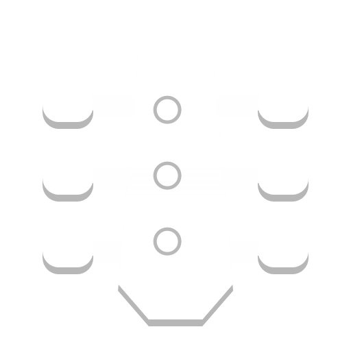
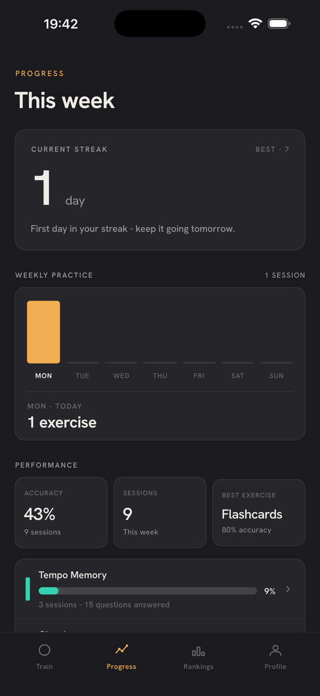
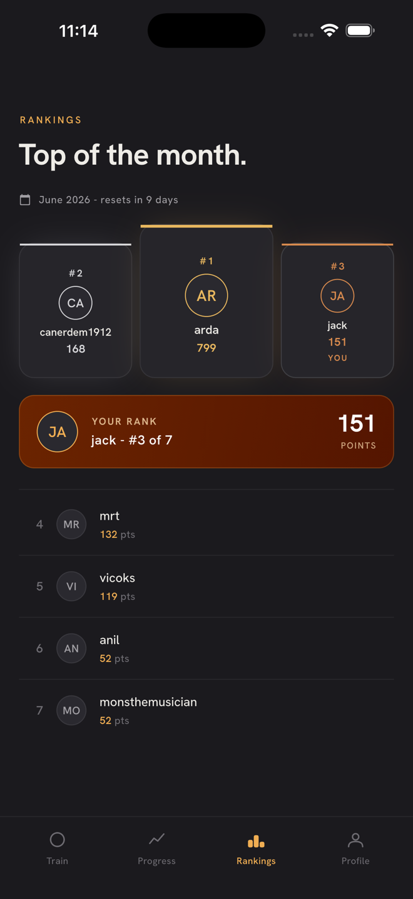

Ear Training App
The ear training app for musicians
Train your ear with interactive exercises and real practice.
Available now on iOS and Android.
All Exercises
Everything you need to develop your listening skills.
Build pitch, rhythm, harmony, and theory recognition with focused practice modes.
Explore every mode

Tuning Trainer
Degree RecognitionProgress
Track your progress as you train.
See your accuracy, improvement, and performance stats after each practice session.

Rankings
Climb the monthly rankings.
Join the monthly rankings, earn points, and climb the board.

FAQ
Frequently Asked Questions
Who is PractEar for?
PractEar is designed for anyone who wants to improve their musical ear, from complete beginners to experienced musicians.
Where can I download PractEar?
PractEar will be available on the App Store and Google Play. Stay tuned for the official release.
What results can I expect from PractEar?
With consistent practice, you will improve your ability to recognize intervals, chords, scales, and rhythms.
Can I use PractEar on multiple devices?
Yes. When you sign in with the same account, your progress can be synced across multiple devices. Sync availability may vary depending on platform support.
Does the app record my voice or audio?
No. PractEar uses your microphone for real-time analysis during exercises, but no audio is recorded, stored, or shared.
Is PractEar free to use?
PractEar offers a free version with limited features. You can upgrade to Pro to unlock the full experience.
What is included in the Pro version?
The Pro version unlocks all exercises and allows unlimited practice sessions.